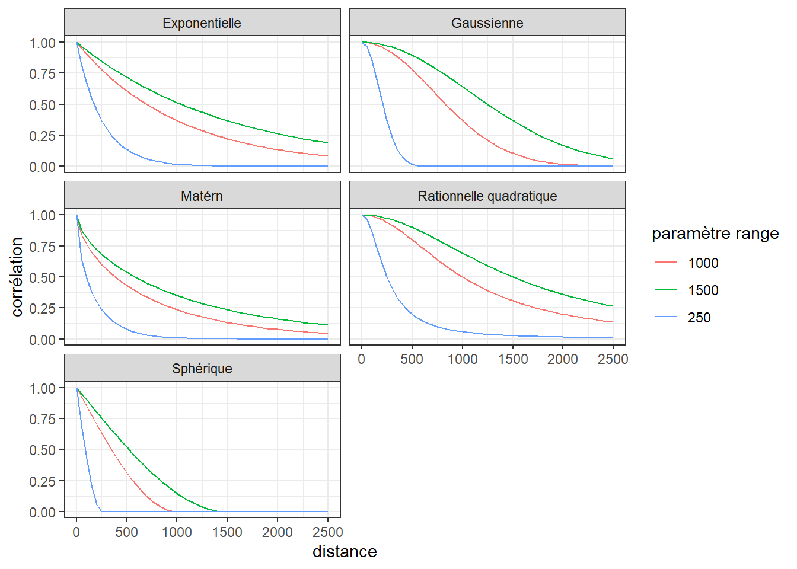
2 Modèles intégrant une structure de covariance spatiale (en cours de révision)
Objectifs d’apprentissage visés dans ce chapitre
À la fin de ce chapitre, vous devriez être en mesure de :
- connaître les différents modèles spatiaux des modèles intégrant une structure de covariance spatiale;
- connaître les différentes fonctions pour construire un modèle des moindres carrés généralisés (GLS) spatial;
- comprendre l’introduction d’une matrice de contiguïté dans un modèle d’autorégression conditionnelle (CAR);
- comprendre le passage du GLS et du CAR vers les modèles à effets mixtes (GLMM);
- mettre en pratique ces modèles spatiaux dans R.
Liste des packages utilisés dans ce chapitre
- Pour manipuler des données :
dplyrpour structurer des données.
- Pour importer et manipuler des fichiers géographiques :
sfpour importer et manipuler des données vectorielles.terrapour importer et manipuler des données raster.
- Pour cartographier des données :
ggplot2,ggpubretcowplotpour construire des graphiques.tmappour construire des cartes thématiques.RColorBrewerpour construire une palette de couleur.
- Pour construire des modèles spatiaux :
spdeppour construire des matrices de pondération spatiales et calculer le I de Moran.spatialregpour construire des modèles CAR.nlmepour construire des modèles GLMM.spaMMpour construire des modèles GLMM avec un effet spatial aléatoire.caretDHARMapour réaliser des diagnostics sur des résidus de modèles.
- Pour construire des tableau :
knitretkableExtrades tableaux avec Quarto.
Dans ce chapitre, nous abordons un ensemble de modèles visant à corriger le problème de la dépendance spatiale dans un modèle de régression section 1.6, et ce, en exploitant la matrice de variance-covariance des résidus. À titre de rappel, dans le modèle MCO classique, plusieurs hypothèses sont formulées concernant les résidus qui doivent être :
normalement distribués;
centrés sur 0;
homoscédastiques;
indépendants des les uns des autres.
Dans ce chapitre, nous modifions notamment la dernière hypothèse pour tenir compte du fait que nous nous attendons à ce que des observations proches spatialement aient des résidus autocorrélés. En intégrant cette connaissance dans le modèle, nous souhaitons réduire les biais dans l’estimation des paramètres du modèle et de l’incertitude associée à ces paramètres. Un modèle MCO est formulé de la façon suivante :
\[ \begin{aligned} &Y = \beta_0 + \beta X + \epsilon\\ &\epsilon \sim N(0,\sigma^2) \end{aligned} \tag{2.1}\]
Selon cette formulation, les variables \(\mathbf{X}\) ne peuvent pas prédire exactement \(\mathbf{Y}\), mais seulement une valeur moyenne attendue de \(\mathbf{Y}\). Les valeurs réelles de \(\mathbf{Y}\) varient autour de cette moyenne attendue en suivant une distribution normale de variance \(\sigma^2\). Plus cette variance est grande, plus grande est notre incertitude et donc nos résidus. Cette valeur est unique et ainsi implique l’hypothèse d’homoscédasticité, soit que la variance soit la même pour tous les résidus. En d’autres termes, on ne s’attend pas à observer des résidus plus grands ou plus petits si la valeur de \(\mathbf{Y}\) est plus grande ou plus petite.
\(\sigma^2\) peut être présenté comme une valeur unique, mais aussi sous forme d’une matrice de variance-covariance :
\[ \operatorname{cov}=\sigma^2\times\left(\begin{array}{cccc} 1 & 0 & \cdots & 0 \\ 0 & 1 & \cdots & \vdots \\ \vdots & \cdots & 1 & \vdots \\ 0 & \cdots & \cdots & 1 \end{array}\right) \tag{2.2}\]
La matrice ci-dessus indique que la variance attendue entre deux résidus d’observations différentes est de 0, et la covariance entre deux résidus d’une même observation est de \(1 \times \sigma^2\). La matrice dont la diagonale est remplie de 1 est appelée la matrice identité.
Les modèles de cette section vont modifier cette matrice de variance-covariance pour introduire la notion de dépendance spatiale. De la sorte, ils corrigent le biais qu’elle introduit en se départissant de l’hypothèse d’indépendance des observations du modèle MCO.
2.1 Modèles des moindres carrés généralisés (GLS)
La méthode des moindres carrés généralisés (GLS) est une méthode d’estimation qui a été développée pour ajuster les paramètres d’un modèle de régression lorsqu’il existe une corrélation différente de zéro entre les résidus du modèle (Aitken 1936). Ce type de modèle est donc parfaitement adapté à l’analyse de données spatialisées puisqu’il permet de corriger très spécifiquement l’enjeu de dépendance spatiale, soit la présence d’autocorrélation spatiale dans les résidus.
2.1.1 Description du modèle GLS
L’idée générale d’un modèle GLS est de modifier la matrice de variance-covariance pour y encoder directement la dépendance spatiale qui existe entre les observations. Concrètrement, il s’agit de remplacer les 0 de la matrice identité par des valeurs représentant le degré de corrélation spatiale entre les observations.
\[ \operatorname{cov}=\sigma^2\times\left(\begin{array}{cccc} 1 & \lambda_{1-2} & \cdots & \lambda_{1-n} \\ \lambda_{1-2} & 1 & \cdots & \vdots \\ \vdots & \cdots & 1 & \vdots \\ \lambda_{1-n} & \cdots & \cdots & 1 \end{array}\right) \tag{2.3}\]
Notez que cette matrice est symétrique, car si une observation i est corrélée avec une observation j, alors j est identiquement corrélée avec i.
Malheureusement, il est impossible d’ajuster un modèle avec une telle matrice si nous ne connaissons aucune des valeurs de corrélation entre les observations (\(\sigma^2_{i-j}\)). En effet, cela voudrait dire que le modèle devrait ajuster un nombre de paramètres égal au nombre de coefficients (plus la constante), plus chacune des valeurs \(\sigma^2_{i-j}\). Or, pour un jeu de donnée de taille n, cela représente \(\frac{n^2}{2}-n\) (la moitié de la matrice moins la diagonale) paramètres! Ce chiffre grandit à mesure que n augmente, il est donc impossible de déterminer cette matrice à partir des données.
Nous pouvons réduire la complexité de ce problème en simplifiant la matrice de corrélation entre les observations. Plutôt que d’ajuster tous les paramètres, nous pouvons partir du principe que la corrélation entre deux observations dépend d’une fonction spécifique. Par exemple, dans un contexte spatial, il serait assez logique de partir du principe que deux observations proches ont une corrélation plus élevée que deux observations lointaines.
\[ \operatorname{cov}=\sigma^2\times\left(\begin{array}{cccc} 1 & f(d_{1-2}) & \cdots & f(d_{1-n}) \\ f(d_{1-2}) & 1 & \cdots & \vdots \\ \vdots & \cdots & 1 & \vdots \\ f(d_{1-n}) & \cdots & \cdots & 1 \end{array}\right) \tag{2.4}\]
Avec \(f(d_{i-j})\) étant la fonction permettant de calculer la corrélation entre les observations i et j séparées par une distance \(d_{i-j}\).
Il est cependant nécessaire que cette fonction f puisse s’ajuster aux données. En effet, parfois l’impact de la distance sera plus ou moins grand; f aura donc des paramètres qui contrôlent son comportement et qui pourront être ajustés dans le modèle. Nous nous retrouvons donc avec une structure de covariance capable de tenir compte de la notion d’autocorrélation spatiale entre les observations.
Il existe plusieurs fonctions utilisées classiquement pour construire des structures de covariance dans un modèle GLS spatial :
- La fonction gaussienne.
- La fonction exponentielle.
- La fonction Matérn.
- La fonction sphérique.
- La fonction rationnelle quadratique.
Ces différentes fonctions permettent toutes de modéliser que l’éloignement entre deux observations est associé avec une diminution de leur corrélation. Chacune dispose de différents paramètres influençant leur forme.
La figure 2.1 illustre ces cinq fonctions. Notons ici que toutes ces fonctions n’ont besoin que d’un seul paramètre appelé le range qui contrôle la vitesse à laquelle la corrélation diminue. Seule la fonction Matérn a un second paramètre nommé \(\nu\) qui contrôle son niveau de lissage (ici fixé à 0,3). Il est difficile de déterminer à l’avance qu’elle sera la fonction la plus adéquate pour un modèle. L’idéal est donc d’ajuster chaque modèle possible, puis de les comparer pour identifier celui produit les meilleurs résultats.
La figure ci-dessous illustre différentes réalisations d’un processus spatial suivant une structure de corrélation de type gaussienne. Les vignettes B, C et D de cette figure représentent des résidus normalement distribués, centrés sur zéro et suivant une structure de corrélation spatiale que peut capturer un modèle GLS. Quant à la première vignette avec range = 0, elle représente des résidus normalement distribués, centrés sur zéro et sans structure d’autocorrélation spatiale.
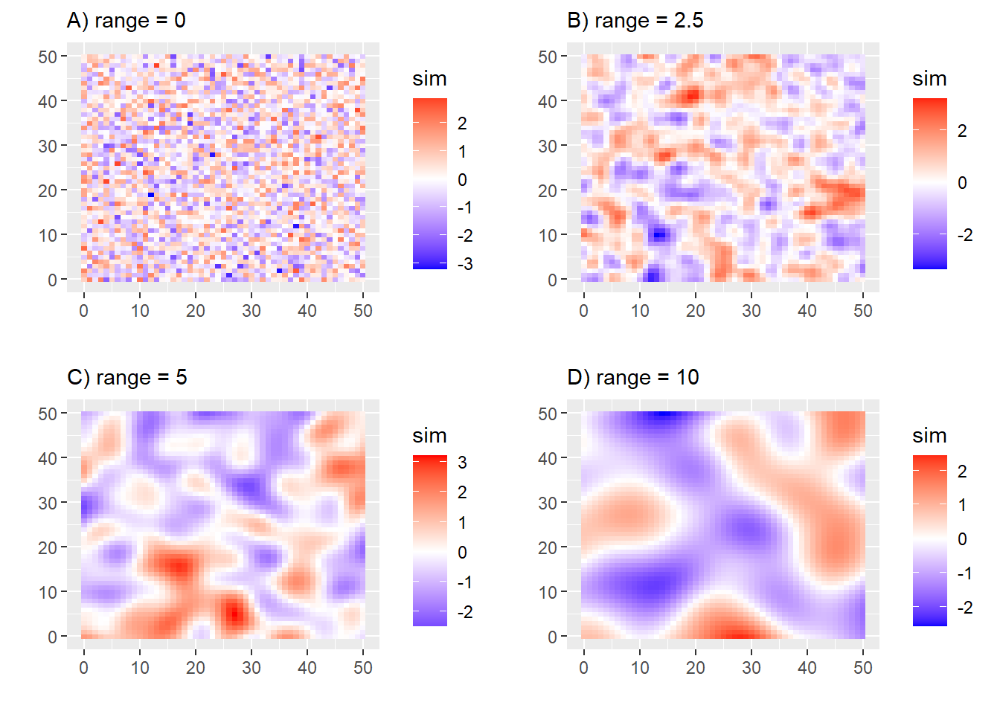
Un des avantages importants du GLS est qu’il reste facile à interpréter. En effet, les coefficients peuvent être interprétés directement comme pour le modèle MCO. L’analyse du modèle peut simplement être complétée par un diagnostic spatial des résidus (avec le I de Moran) et une interprétation de la fonction de corrélation spatiale obtenue.
Spécificité d’un GLS
Puisque le modèle GLS modélise l’autocorrélation spatiale en se basant sur une fonction qui tient compte des distances entre les observations, plusieurs points doivent être gardés à l’esprit quant à son utilisation :
- La distance entre les observations doit être une bonne représentation de l’espace géographique des données. Il faut donc privilégier ce type de modèle avec des données ponctuelles plutôt que polygonales et irrégulières, car les distances entre les centroïdes de ces dernières ne représentent pas bien leurs tailles variables.
- Les distances entre les observations doivent être symétriques.
- On dit que la prise en compte de l’autocorrélation spatiale est paramétrique, car elle suit une fonction prédéterminée.
- La fonction modélisant l’autocorrélation spatiale est isotrope, elle ne tient pas compte des directions, mais seulement des distances.
- Deux entités avec exactement la même localisation sont donc parfaitement corrélées entre elles. Dans les faits, les packages ajustant des modèles GLS renvoient des erreurs lorsque des observations partagent exactement la même localisation.
2.1.2 Mise en œuvre et analyse dans R
Pour illustrer la réalisation de différents modèles GLS, nous utilisons le jeu de données sur le prix des logements Airbnb sur l’Île de Montréal (section 1.1.5). Ce jeu de donnée comporte 2500 logements airbnb pour lesquels nous connaissons un ensemble d’informations sur la nature du logement, son propriétaire ainsi que l’environnement à proximité du logement. Nous tentons ici de modéliser le prix par nuit de ces logements (@fig-glsdescribrep).
library(sf, quietly = TRUE)
library(ggplot2, quietly = TRUE)
library(tmap, quietly = TRUE)
library(dplyr, quietly = TRUE)
library(ggpubr, quietly = TRUE)
library(cowplot, quietly = TRUE)
library(spdep, quietly = TRUE)
library(DHARMa, quietly = TRUE)
library(nlme, quietly = TRUE)
library(car, quietly = TRUE)
# Chargement des données
data_airbnb <- readRDS('data/airbnb.rds')
ggplot(data_airbnb) +
geom_histogram(aes(x = price), fill = 'wheat', color = 'black', bins = 30) +
theme_bw() +
labs(x = 'prix par nuit ($)',
y = 'effectif'
)
legende_parametres <- list(text.separator = "à",
text.less.than = "Moins de",
text.or.more = "et plus",
decimal.mark = ",",
big.mark = " ")
tm_shape(data_airbnb) +
tm_dots(
col = NULL,
fill = 'price',
size = .3,
fill.scale = tm_scale_intervals(
style = 'pretty', n = 5,
values = 'brewer.reds',
label.format = legende_parametres),
fill.legend = tm_legend(
title = "Prix ($)",
frame = FALSE,
position = tm_pos_in("center", "top"))
) +
tm_layout(frame = TRUE)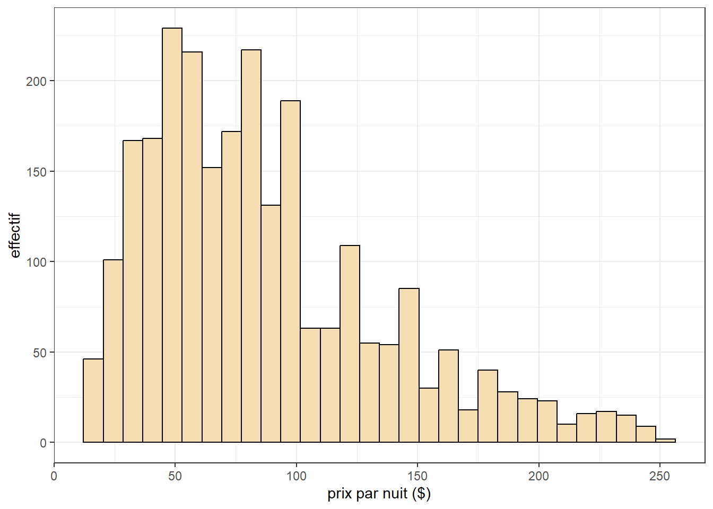
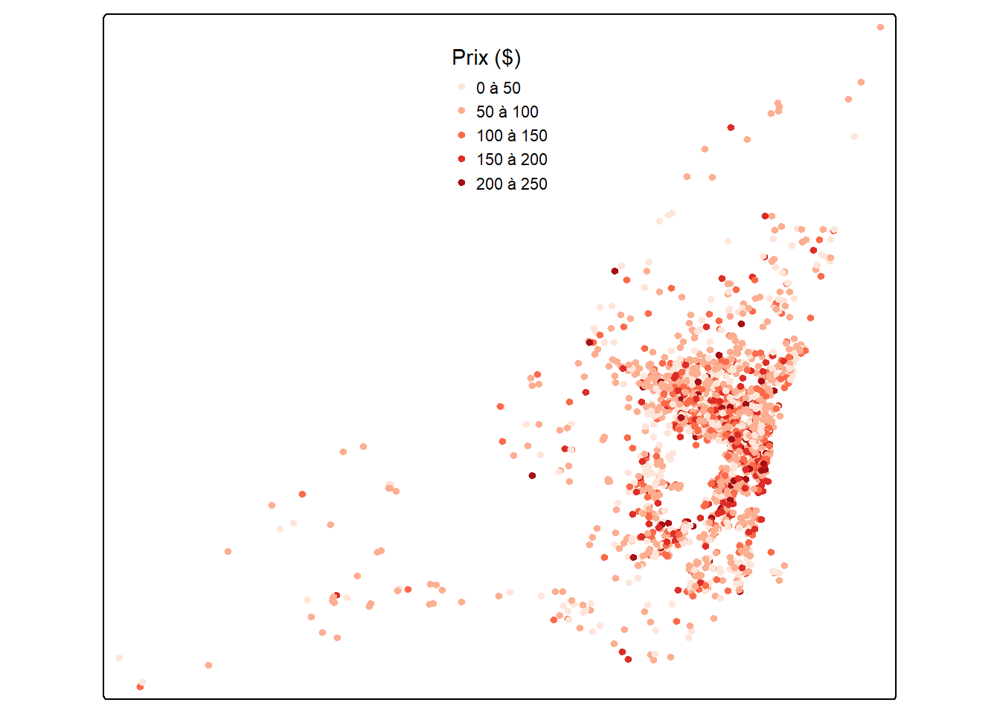
Nous commençons par créer un modèle ne tenant pas compte de l’autocorrélation spatiale.
# Structuration des données
data_airbnb$super_hote <- ifelse(data_airbnb$host_is_superhost == 't', 'YES', 'NO')
data_airbnb$prive <- factor(data_airbnb$private, levels = c('Chambre', 'Entier'))
data_airbnb$stationnement_gratuit <- factor(data_airbnb$Free_street_parking, levels = c('NO', 'YES'))
data_airbnb$jardin_ou_cours <- factor(data_airbnb$Garden_or_backyard, levels = c('NO', 'YES'))
data_airbnb$super_hote <- factor(data_airbnb$super_hote, levels = c('NO', 'YES'))
data_airbnb$metro_500m <- factor(data_airbnb$has_metro_500m, levels = c('NO', 'YES'))
# Nous regarderons l'impact de 10 évaluations supplementaires
data_airbnb$number_of_reviews <- data_airbnb$number_of_reviews / 10
model_data <- data_airbnb %>%
dplyr::select(any_of(c('price','private','stationnement_gratuit', 'jardin_ou_cours',
'bedrooms', 'super_hote',
'number_of_reviews','review_scores_rating','metro_500m',
'prt_veg_500m'))) %>%
filter(complete.cases(st_drop_geometry(.)))
model_data$log_price <- log(model_data$price)
XY <- st_coordinates(model_data)
model_data$X <- XY[,1]
model_data$Y <- XY[,2]
# Construction du modèle MCO
model1 <- lm(log_price ~ private + bedrooms +
stationnement_gratuit + jardin_ou_cours +
number_of_reviews + review_scores_rating + super_hote +
prt_veg_500m + metro_500m,
data = model_data
)
summary(model1)
Call:
lm(formula = log_price ~ private + bedrooms + stationnement_gratuit +
jardin_ou_cours + number_of_reviews + review_scores_rating +
super_hote + prt_veg_500m + metro_500m, data = model_data)
Residuals:
Min 1Q Median 3Q Max
-3.1696 -0.2913 -0.0123 0.2984 1.7758
Coefficients:
Estimate Std. Error t value Pr(>|t|)
(Intercept) 3.0629819 0.1750497 17.498 < 2e-16 ***
privateEntier 0.6541329 0.0217423 30.086 < 2e-16 ***
bedrooms 0.1812994 0.0115970 15.633 < 2e-16 ***
stationnement_gratuitYES 0.0096143 0.0205063 0.469 0.639227
jardin_ou_coursYES -0.0162075 0.0289968 -0.559 0.576258
number_of_reviews 0.0034418 0.0020083 1.714 0.086706 .
review_scores_rating 0.0064570 0.0017939 3.599 0.000326 ***
super_hoteYES 0.0369738 0.0228736 1.616 0.106139
prt_veg_500m -0.0041519 0.0009893 -4.197 2.81e-05 ***
metro_500mYES 0.0579132 0.0205640 2.816 0.004901 **
---
Signif. codes: 0 '***' 0.001 '**' 0.01 '*' 0.05 '.' 0.1 ' ' 1
Residual standard error: 0.4458 on 2250 degrees of freedom
Multiple R-squared: 0.4422, Adjusted R-squared: 0.4399
F-statistic: 198.2 on 9 and 2250 DF, p-value: < 2.2e-16Le modèle MCO explique un peu plus que 45 % de la variance du prix des logements.
model_data$residual_lm <- residuals(model1)
knn_list <- knearneigh(model_data, k = 10)
nb_list <- knn2nb(knn_list, sym = TRUE)
listw <- nb2listwdist(nb_list, model_data , style = 'W', type = 'idw', alpha = 2)
test <- moran.mc(model_data$residual_lm, listw, nsim = 999)
print(test)
Monte-Carlo simulation of Moran I
data: model_data$residual_lm
weights: listw
number of simulations + 1: 1000
statistic = 0.12418, observed rank = 1000, p-value = 0.001
alternative hypothesis: greaterNous avons cependant une autocorrélation spatiale résiduelle faible, mais significative avec un I de moran de 0,12.
plot(simulateResiduals(model1))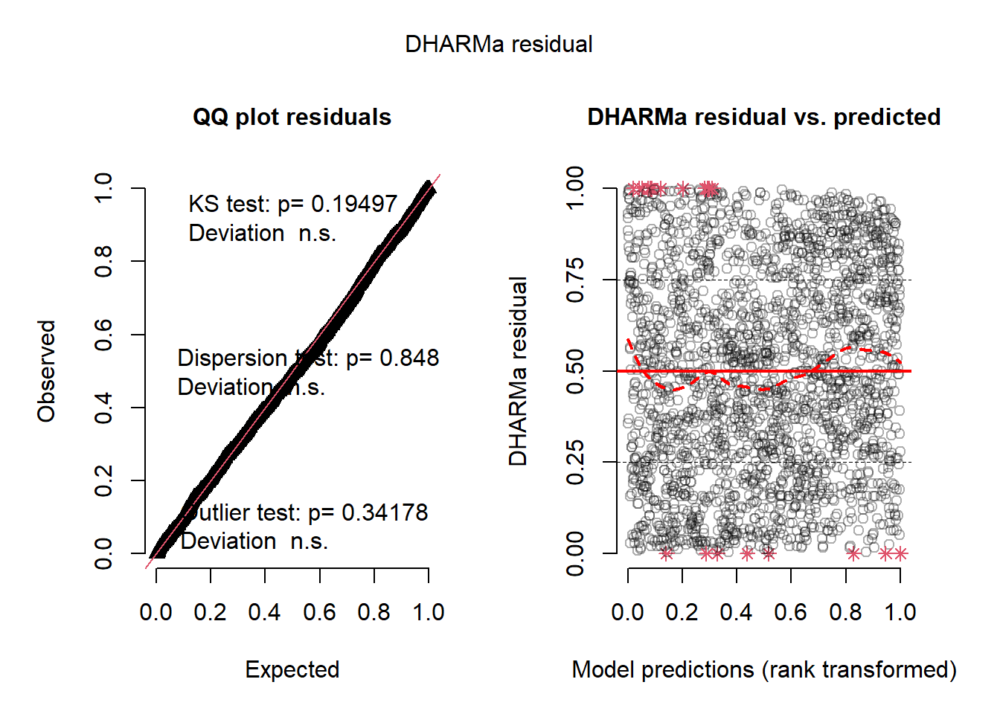
Les résidus semblent bien suivre une distribution normale et avoir une variance homogène. Pour régler le problème de l’autocorrélation spatiale, nous allons utiliser la méthode des moindres carrés généralisés (GLS). Nous allons pour cela utiliser le package nlme qui offre quatre fonctions différentes pour créer une structure de covariance spatiale.
# Exponentielle
modelExp <- gls(
log_price ~ private + bedrooms +
stationnement_gratuit + jardin_ou_cours +
number_of_reviews + review_scores_rating + super_hote +
prt_veg_500m + metro_500m,
data = model_data,
correlation = corExp(form = ~ X + Y, nugget = TRUE)
)
# Gaussienne
modelGau <- gls(
log_price ~ private + bedrooms +
stationnement_gratuit + jardin_ou_cours +
number_of_reviews + review_scores_rating + super_hote +
prt_veg_500m + metro_500m,
data = model_data,
correlation = corGaus(form = ~ X + Y, nugget = TRUE)
)
# Sphérique
modelSph <- gls(
log_price ~ private + bedrooms +
stationnement_gratuit + jardin_ou_cours +
number_of_reviews + review_scores_rating + super_hote +
prt_veg_500m + metro_500m,
data = model_data,
correlation = corSpher(form = ~ X + Y, nugget = TRUE)
)
# Rationelle quadratique
modelRatio <- gls(
log_price ~ private + bedrooms +
stationnement_gratuit + jardin_ou_cours +
number_of_reviews + review_scores_rating + super_hote +
prt_veg_500m + metro_500m,
data = model_data,
correlation = corRatio(form = ~ X + Y, nugget = TRUE)
)Une fois les quatre modèles construits, nous les comparons afin de retenir celui qui est le mieux ajusté aux données. Pour ce faire, nous utilisons l’AIC puisque ces modèles ont exactement la même structure.
AIC(modelExp, modelGau, modelSph, modelRatio) df AIC
modelExp 13 2854.930
modelGau 13 2854.639
modelSph 13 2854.667
modelRatio 13 2720.437struc <- modelRatio$modelStruct$corStruct
print(struc)Correlation structure of class corRatio representing
range nugget
768.0546254 0.8579333 Le modèle avec la structure de covariance basée sur la fonction quadratique rationnelle est de loin le modèle avec la valeur d’AIC le plus basse. Son paramètre de range est de 768, ce qui signifie qu’au-delà de 768 mètres, la semi-variance cesse d’augmenter. Cette distance marque donc la limite au-delà de laquelle les observations sont indépendantes spatialement. La figure 2.6 permet de représenter la fonction de corrélation sous-jacente à cette structure de covariance.
## Structure rationnelle quadratique
corRatio <- function(n, r, d){
return(
(1-n) / (1+(r/d)**2)
)
}
distances <- seq(0,1000,10)
df_corr <- data.frame(
distance = distances,
correlation = corRatio(n = 0.8579,
d = 768.05,
r = distances
)
)
ggplot(df_corr) +
geom_line(aes(x = distance, y = correlation)) +
theme_bw() +
labs(title = 'Structure de corrélation du modèle GLS')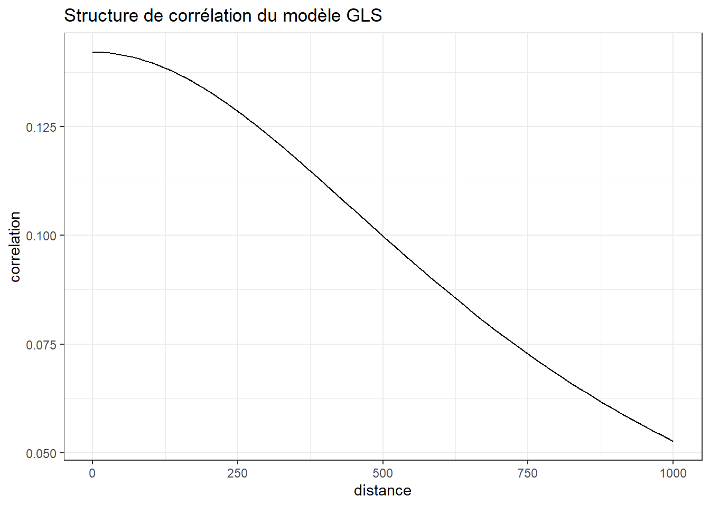
Nous constatons que le modèle prévoit une autocorrélation spatiale positive, mais relativement faible pour les observations dans un rayon relativement limité. Il y a donc de fortes chances que les conclusions de ce modèle soient très proches de celle du modèle linéaire simple. Pour tester la distribution des résidus d’un modèle GLS, il est important d’utiliser les résidus normalisés qui tiennent compte de la structure de corrélation introduite dans le modèle (Gałecki et al. 2013).
model_data$residual_gls <- residuals(modelRatio, type = "normalized")
knn_list <- knearneigh(model_data, k = 10)
nb_list <- knn2nb(knn_list, sym = TRUE)
listw <- nb2listwdist(nb_list, model_data , style = 'W', type = 'idw', alpha = 2)
test <- moran.mc(model_data$residual_gls, listw, nsim = 999)
print(test)
Monte-Carlo simulation of Moran I
data: model_data$residual_gls
weights: listw
number of simulations + 1: 1000
statistic = 0.023265, observed rank = 932, p-value = 0.068
alternative hypothesis: greaterNotre modèle GLS a donc pu retirer l’autocorrélation qui restait dans les résidus du notre modèle MCO original. Nous pouvons donc à présent vérifier la distribution de ses résidus.
qqPlot(model_data$residual_gls)[1] 1843 1218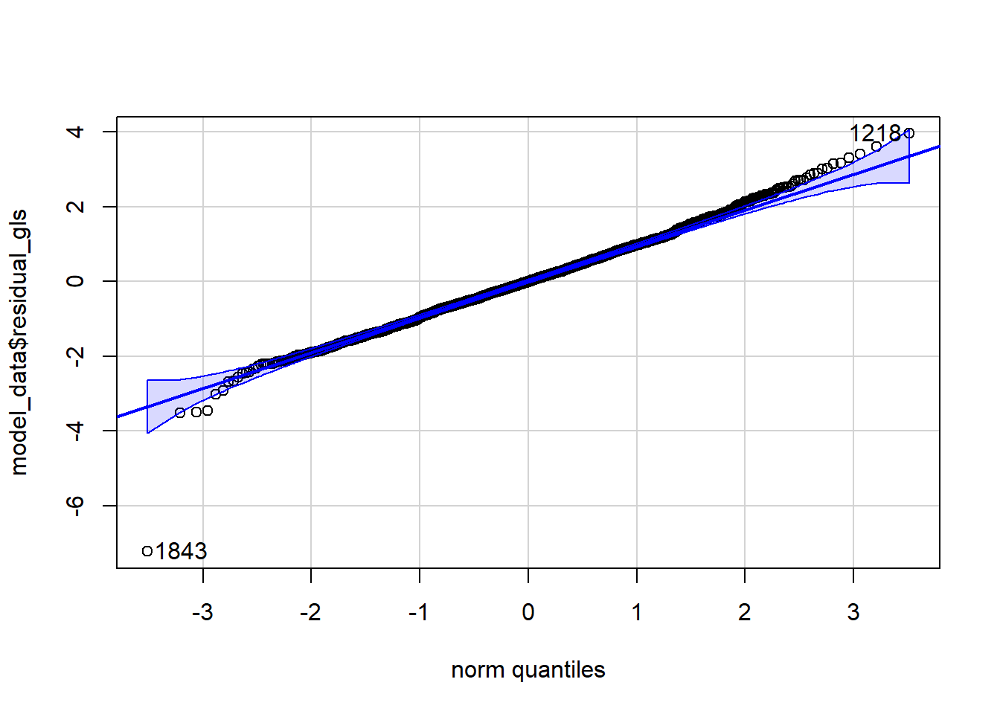
La figure 2.7 indique que les résidus semblent suivre une distribution très proche d’une distribution normale. Il semble qu’une observation pourrait être considérée comme une valeur aberrante.
subset(model_data, model_data$residual_gls < -6)Simple feature collection with 1 feature and 15 fields
Geometry type: POINT
Dimension: XY
Bounding box: xmin: 298524.8 ymin: 5039445 xmax: 298524.8 ymax: 5039445
Projected CRS: NAD83 / MTM zone 8
# A tibble: 1 × 16
price private stationnement_gratuit jardin_ou_cours bedrooms super_hote
<dbl> <chr> <fct> <fct> <int> <fct>
1 108 Entier NO NO 20 NO
# ℹ 10 more variables: number_of_reviews <dbl>, review_scores_rating <int>,
# metro_500m <fct>, prt_veg_500m <dbl>, geometry <POINT [m]>,
# log_price <dbl>, X <dbl>, Y <dbl>, residual_lm <dbl>, residual_gls <dbl>Il s’agit d’un logement un peu étrange disposant de 20 chambres pour seulement 108 $ par nuit. Nous pouvons à présenter comparer les coefficients obtenus par les deux modèles.
library(knitr, quietly = TRUE)
library(kableExtra, quietly = TRUE)
s1 <- summary(model1)
s2 <- summary(modelRatio)
df1 <- data.frame(s1$coefficients[,c(1,2,4)])
df2 <- data.frame(s2$tTable[,c(1,2,4)])
rownames(df1)[1] <- "constante"
rownames(df2)[1] <- "constante"
kable(cbind(df1, df2),
digits = 3,
format.args = list(decimal.mark = ',', big.mark = " "),
col.names = c('coef.', 'err. std.', 'val. p',
'coef.', 'err. std.', 'val. p')) %>%
kable_classic() %>%
add_header_above(c(' ' = 1, "Modèle MCO" = 3, "Modèle GLS" = 3))
Modèle MCO
|
Modèle GLS
|
|||||
|---|---|---|---|---|---|---|
| coef. | err. std. | val. p | coef. | err. std. | val. p | |
| constante | 3,063 | 0,175 | 0,000 | 2,893 | 0,180 | 0,000 |
| privateEntier | 0,654 | 0,022 | 0,000 | 0,657 | 0,021 | 0,000 |
| bedrooms | 0,181 | 0,012 | 0,000 | 0,182 | 0,011 | 0,000 |
| stationnement_gratuitYES | 0,010 | 0,021 | 0,639 | 0,050 | 0,020 | 0,015 |
| jardin_ou_coursYES | -0,016 | 0,029 | 0,576 | 0,005 | 0,028 | 0,869 |
| number_of_reviews | 0,003 | 0,002 | 0,087 | 0,001 | 0,002 | 0,552 |
| review_scores_rating | 0,006 | 0,002 | 0,000 | 0,006 | 0,002 | 0,000 |
| super_hoteYES | 0,037 | 0,023 | 0,106 | 0,029 | 0,022 | 0,186 |
| prt_veg_500m | -0,004 | 0,001 | 0,000 | 0,000 | 0,002 | 0,809 |
| metro_500mYES | 0,058 | 0,021 | 0,005 | 0,029 | 0,028 | 0,295 |
Il est intéressant de constater que même en corrigeant une autocorrélation spatiale des résidus relativement minime, nous obtenons des résultats assez différents pour ces deux modèles. Commençons par regarder les éléments qui font consensus pour les deux modèles.
- Un logement entier privé plutôt qu’un logement partagé a un impact positif et significatif sur le prix à la nuit. Les deux modèles donnent un coefficient d’environ 0,654 sur l’échelle logarithme. Ceci signifie qu’un logement privé coûte en moyenne 1,92 qu’un logement partagé.
- Chaque chambre supplémentaire fait augmenter le prix du logement d’environ 0,181 sur l’échelle logarithme. Cela signifie qu’une chambre supplémentaire augmente le prix moyen d’un logement de 19,88%.
- Une note moyenne pour les évaluations plus élevée est aussi associée à un prix plus élevé. Une augmentation de 10 points de pourcentage du score est associée avec une augmentation du prix moyen du logement de 6,67 %.
- Le qualificatif de super hôte ou encore la présence d’un jardin ou d’une cour ne semblent pas avoir d’impact significatif.
Les deux modèles ont aussi des points de désaccord importants :
- Pour le modèle linéaire simple, le fait de disposer d’un stationnement gratuit avec le logement a un impact non significatif. Pour le modèle GLS, le fait de disposer d’un stationnement contribue à augmenter le prix par nuit de 5,1% (p = 0,015.
- Le modèle linéaire simple indiquait que la densité de végétation dans un rayon de 500 mètres réduisait le prix des logements. Par contre, la présence d’une station de métro dans un rayon de 500 mètres était associée à une augmentation du prix des logements. Le modèle GLS indique que ces deux effets sont non significatifs. Ceci s’explique vraisemblablement par la prise en compte de l’espace par le modèle GLS.
2.2 Modèle d’autorégression conditionnelle (CAR)
Le modèle d’autorégression conditionnelle (CAR) modifie lui aussi la matrice de variance-covariance des résidus du modèle. Cependant, il n’est pas estimé par la méthode des moindres carrés généralisés, mais plutôt par maximum de vraissemblance ou avec des méthodes bayesiennes.
2.2.1 Description du modèle CAR
Le modèle CAR a été conçu pour travailler sur des entités polygonales en tenant compte de leur matrice de voisinage. Un modèle CAR peut donc être formulé de la façon suivante :
\[ \begin{aligned} &y = \beta_0 + \beta X + \epsilon\\ &\epsilon \sim N(0,\sigma^2(D - \rho W)^{-1}) \end{aligned} \tag{2.5}\]
Avec :
- \(W\), une matrice spatiale binaire symétrique de taille \(n \times n\). \(W_{ij} = 1\) indiquant que les observations \(i\) et \(j\) sont voisines
- \(D\), une matrice indiquant pour chaque observation son nombre de voisins. Donc seule sa diagonale comporte des valeurs positives, toutes les autres cellules sont remplies de zéros.
- \(\rho\), le paramètre d’autocorrélation spatiale. Il varie généralement entre 0 (modèle sans autocorrélation spatiale) et 1. Lorsqu’il augmente, les valeurs de la matrice de variance-covariance en dehors de la diagonale augmentent, indiquant une plus forte autocorrélation spatiale entre voisin.
Ce modèle formule donc une hypothèse de dépendance conditionnelle entre les résidus des observations voisines. Le modèle CAR s’inspire directement des chaînes et des champs de Markov dont il tire une propriété centrale : la valeur de l’effet spatial d’une observation i ne dépend que de celles de ses observations voisines j. Pour mieux visualiser l’impact du paramètre \(\rho\), nous pouvons visualiser à la figure 2.8 différentes réalisations d’une distribution normale centrée sur zéro avec une structure de variance-covariance suivant un modèle CAR.
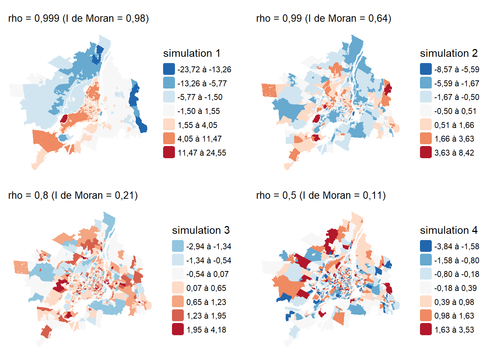
Comme le modèle GLS, le modèle CAR est relativement facile à utiliser, car il est possible d’interpréter directement les coefficients du modèle. En revanche, le paramètre \(rho\) contrôlant l’autocorrélation spatiale ne peut pas être interpréter directement, car il dépend directement de la matrice spatiale W. On peut seulement indiquer si sa valeur est positive (autocorrélation spatiale positive) ou négative (autocorrélation spatiale négative). Il est généralement pertinent de cartographier le terme spatial du modèle CAR afin d’évaluer visuellement son degré d’autocorrélation spatiale.
2.2.2 Mise en œuvre et analyse dans R
Pour illustrer l’utilisation du modèle CAR, nous utilisons le jeu de données sur les parts modales dans la région métropolitaine de Montréal (section 1.1.2). Ce jeu de données comprend trois variables mesurant respectivement la proportion des individus utilisant la voiture, le transport collectif ou un mode actif (marche ou vélo) comme mode de transport principal pour leurs déplacements domicile-travail en 2021 pour les secteurs de recensement (figure 1.2).
Comme indiqué dans la section 6.5, nous utilisons ici la méthode du log des ratios (alr) pour analyser ces données compositionnelles. Plus exactement, nous modélisons le log entre le ratio des personnes utilisant principalement le transport en commun et des automobilistes.
library(sf, quietly = TRUE)
library(ggplot2, quietly = TRUE)
library(tmap, quietly = TRUE)
library(dplyr, quietly = TRUE)
library(spatialreg, quietly = TRUE)
library(DHARMa, quietly = TRUE)
# Chargement des données
load("data/Mtl.Rdata")
# Nous préparons ici les données en calculant les ratios
# remplaçant les 0 et calculant la transformation alr
data_mtl <- data_mtl %>%
mutate(
prt_tc = ifelse(prt_tc == 0, min(prt_tc[prt_tc>0]) ,prt_tc)
) %>%
mutate(
ratio = (prt_tc / prt_auto),
alr_val = log(prt_tc / prt_auto),
acs_idx_emp_tc_peak = acs_idx_emp_tc_peak * 100,
acs_idx_emp_pieton = acs_idx_emp_pieton * 100
)Nous pouvons à présent ajuster notre modèle CAR avec le package spatialreg. Nous devons utiliser une matrice spatiale binaire pour ajuster le modèle.
nbs <- poly2nb(data_mtl, queen = TRUE)
listw <- nb2listw(nbs, style = 'B', zero.policy = TRUE)
model_car <- spautolm(
alr_val ~ prt_minorite_vis + prt_monoparental +
prt_chomage + revenu_median + prt_personnes_faibles_revenu +
acs_idx_emp_tc_peak + acs_idx_emp_pieton,
data = data_mtl,
listw = listw,
family = 'CAR',
zero.policy = TRUE
)
listw2 <- nb2listw(nbs, style = 'W', zero.policy = TRUE)
moran.mc(residuals(model_car), listw = listw2, nsim = 999)
Monte-Carlo simulation of Moran I
data: residuals(model_car)
weights: listw2
number of simulations + 1: 1000
statistic = -0.0014516, observed rank = 502, p-value = 0.498
alternative hypothesis: greaterLe modèle CAR est bien parvenu à retirer l’aucorrélation spatiale des résidus.
df <- data.frame(
residus_car = model_car$fit$residuals
)
Mean <- mean(df$residus_car)
Sd <- sqrt(model_car$fit$s2)
ggplot(df) +
geom_histogram(aes(x=residus_car,y =..density..),bins=30,fill="white",color="black")+
stat_function(aes(x=residus_car),fun = dnorm, args = list(mean = Mean, sd = Sd),color="red",size=1) +
labs(x = 'résidus du modèle CAR', y = '')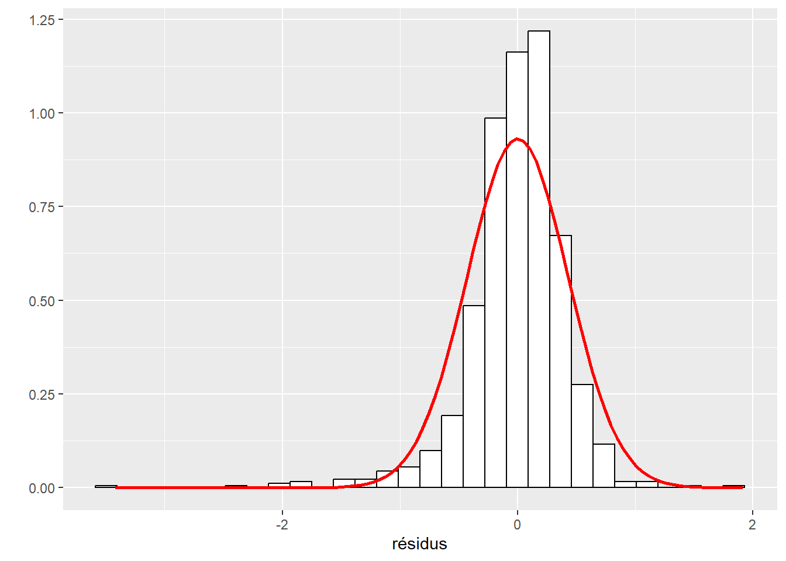
Cependant, ses résidus ne suivent pas vraiment une distribution normale, il faudrait donc être prudent dans l’interprétation des résultats.
| Variable | Coefficient | exp(coefficent) | Valeur de p |
|---|---|---|---|
| Constante | -3,819 | 0,022 | 0,000 |
| prt_minorite_vis | 1,422 | 4,144 | 0,000 |
| prt_monoparental | 0,840 | 2,316 | 0,019 |
| prt_chomage | 1,311 | 3,712 | 0,108 |
| revenu_median | 0,003 | 1,003 | 0,226 |
| prt_personnes_faibles_revenu | 0,034 | 1,035 | 0,000 |
| acs_idx_emp_tc_peak | 0,051 | 1,052 | 0,000 |
| acs_idx_emp_pieton | -0,024 | 0,976 | 0,000 |
| rho = 0,138. R2 de Nagelkerke = 0,891. |
Le coefficient d’autocorrélation spatiale rho (appelé lambda par la fonction summary) est positif dans le modèle. Pour visualiser le terme spatial ajouté au modèle, on peut utiliser l’élément appelé signal_stochastic dans l’objet obtenu via la fonction spautolm. Ce terme correspond à la partie spatialement distribuée des résidus, à séparer du bruit blanc, soit les résidus distribués aléatoirement dans l’espace. Nous transformons ce terme avec la fonction log afin de pouvoir interpréter le résultat sur l’échelle originale des données, soit le ratio entre la part modale du transport collectif et de la voiture.
data_mtl$car_term <- exp(model_car$fit$signal_stochastic)
tm_shape(data_mtl) +
tm_polygons(col = "darkgrey", lwd = 0.01,
fill ="car_term",
fill.scale = tm_scale_intervals(
n = 7, style = "fisher", midpoint = 1,
label.format = legende_parametres,
values = "-brewer.rd_bu"),
fill.legend = tm_legend(
title = "Terme spatial \ndu modèle CAR",
frame = FALSE,
position = tm_pos_out("right", pos.v = "center"))
) +
tm_layout(frame=FALSE) +
tm_scalebar(breaks = c(0,10),
position = tm_pos_out("right", "bottom"))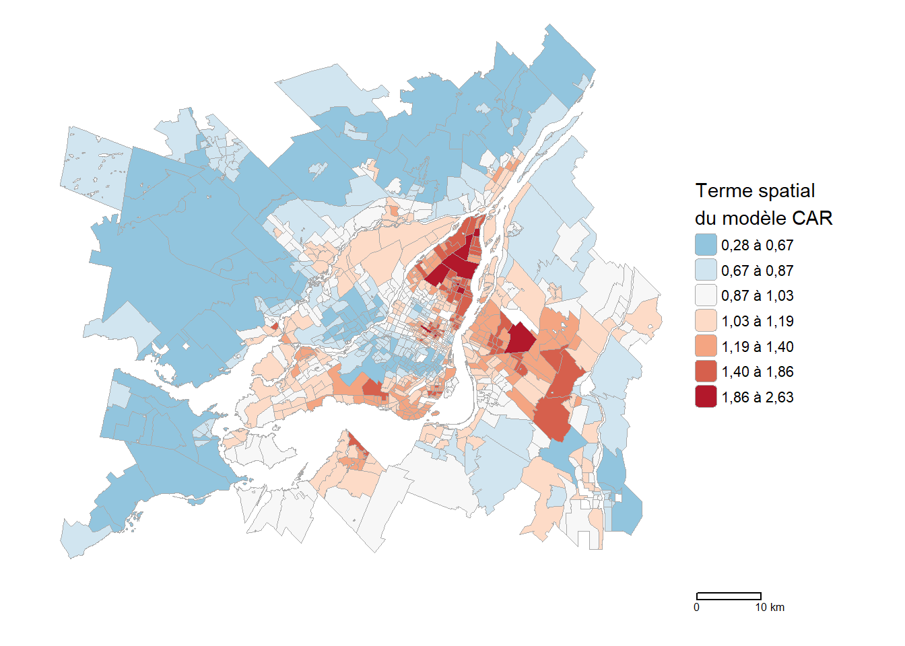
À la figure 2.10, nous observons des zones pour lesquelles le modèle s’attend à voir des valeurs plus élevées ou plus faibles que ce qui est seulement capturé par les variables dépendantes. Premièrement, la couronne nord est marquée par valeurs négatives avec une réduction du ratio entre les parts modales du transport collectif et la voiture allant de 40 à 60 %. Une tendance similaire s’observe pour l’arrondissement Saint-Laurent et les municipalités de Mont-Royal, Westmount et Côte-Saint-Luc, ainsi que le centre et le sud de Laval. En revanche, on observe des valeurs plus élevées (multiplication par deux) du ratio à Rivière-des-Pairies-Pointe-aux-Tremble et à Longueuil sur la Rive-Sud.
2.3 Modèles linéaires généralisés à effets mixtes
Nous avons vu qu’un modèle GLS (section 2.1) ou un modèle CAR (section 2.2) est construit en modifiant la structure de covariance d’un modèle linéaire classique (MCO). Toutefois, le principe de la structure de covariance est difficile à généraliser pour des distributions autres que la distribution normale. Ainsi, il est complexe d’utiliser les modèles CAR et GLS pour des variables binaires, et encore plus pour des variables de comptage ou multinomiale. Plus généralement, il est difficile d’intégrer la dimension spatiale dans un modèle de type GLM en modifiant simplement la structure de covariance.
2.3.1 Du GLS et du CAR aux GLMM
Nous montrons ci-dessous comment les modèles GLS et CAR peuvent être reformulés comme des modèles GLMM. Cette explication reste volontairement relativement simplifiée, car elle ne tient pas compte du fait que ces modèles utilisent différentes approches d’estimation. En reprenant les formulations des modèles GLS et CAR, il est possible des unifier en une seule :
\[ \begin{aligned} &y = \beta_0 + \beta X + \epsilon\\ &\epsilon \sim N(0,\Omega) \end{aligned} \tag{2.6}\]
Avec \(\Omega\), une matrice de variance-covariance, pouvant correspondre à celle utilisée par un modèle GLS ou CAR. Comme nous l’avons vu avec le modèle CAR, les résidus se décomposent en deux parties : une partie spatialement structurée et une autre, aléatoirement distribuée dans l’espace (soit le bruit blanc). Modifions l’équation précédente pour séparer ces deux quantités :
\[ \begin{aligned} &y = \beta_0 + \beta X + \epsilon + \nu\\ &\nu \sim N(0,\Omega)\\ &\epsilon \sim N(0,\sigma)\\ \end{aligned} \tag{2.7}\]
Avec ces deux termes résiduels séparés, nous reformulons le modèle afin qu’il se rapproche de la formulation habituelle d’un GLM :
\[ \begin{aligned} &y \sim N(\mu,\sigma)\\ &\mu = \beta_0 + \beta X + \nu\\ &\nu \sim N(0,\Omega)\\ \end{aligned} \tag{2.8}\]
Il convient de souligner que les deux formulations sont strictement équivalentes. Le modèle stipule que y suit une distribution normale dont la moyenne \(\mu\) est prédite par une équation de régression. Cependant, ce permet pas de prédire avec exactitude la valeur de y, car une certaine variabilité subsiste autour de la moyenne prédite. Cette variation suit une distribution normale avec une variance \(\sigma\). Nous avons ainsi deux sources de variance : une composante inexpliquée et réellement aléatoire, et une composante structurée spatialement. Les effets associés à ces deux composantes ont une espérance nulle, ce qui signifie qu’en moyenne, lorsqu’on considère l’ensemble des observations, les effets aléatoires et spatiaux s’annulent.
À partir de ce point, il devient possible de changer le modèle pour travailler avec d’autres distributions que celle normale. Nous obtenons ainsi des modèles linéaires généralisés à effets mixtes (GLMM) avec un effet aléatoire spatialement structuré. Cette structure spatiale est modélisée par un terme aléatoire suivant une distribution normale multivariée centrée en zéro, dont la structure de covariance suit une forme spécifique définie avec une fonction gaussienne, sphérique, exponentielle, de Matérn ou rationnelle quadratique ou encore une structure CAR.
Par exemple, pour une variable dépendante binaire, nous pourrions formuler le modèle suivant :
\[ \begin{aligned} &y \sim Binomial(p)\\ &g(p) = \beta_0 + \beta X + \zeta\\ &\zeta \sim N(0,\Omega) \\ &g(x) = log(\frac{x}{1-x}) \end{aligned} \tag{2.9}\]
Nous modélisons donc la variable y en formulant le postulat qu’elle suit une distribution binomiale, et nous prédisons la probabilité p d’observer l’évènement \(y=1\). Cette probabilité est conditionnée par notre équation de régression, transformée par la fonction de lien logistique. Cette dernière garantit que la prédiction du modèle sera comprise entre 0 et 1 (une probabilité). Finalement, l’autocorrélation spatiale est captée comme une variable latente suivant une distribution normale multivariée, centrée sur 0 et présentant une structure d’autocorrélation spatiale représentée par la matrice de covariance \(\Omega\).
Ce type de modèle est donc appelé un modèle linéaire généralisé à effets mixtes (GLMM). Son nom vient du fait que ce modèle combine deux types d’effets : des effets fixes (soit les simples coefficients \(\beta\)) et des effets aléatoires (\(\zeta\)).
Modèles à effets mixtes
Pour une description plus détaillée de ces modèles à effets mixtes, notamment leur utilisation pour tenir compte de structures hiérarchiques, vous pouvez consulter le chapitre sur les GLMM du livre Méthodes quantitatives en sciences sociales : un grand bol d’R (Apparicio et Gelb 2022).
2.3.2 Mise en œuvre dans R
Nous illustrons ici comment construire un modèle GLMM avec un effet spatial. Pour cela, nous tentons de reproduire les résultats de l’étude de Kaashoek et al. (2022) avec le jeu de donnée décrit à la section 1.1.4.
Pour nous rapprocher le plus possible de l’analyse effectuée par les auteurs, nous appliquerons la même stratégie de modélisation de la variable dépendante. Plutôt que de modéliser directement le taux de décès, nous modélisons le nombre de décès avec une distribution Poisson en intégrant le nombre d’habitants dans l’équation de régression. Cette stratégie, appelée un offset, permet de prédire directement le taux de décès avec un modèle Poisson en contrôlant la taille de la population qui varie d’un comté à l’autre.
library(sf, quietly = TRUE)
library(ggplot2, quietly = TRUE)
library(tmap, quietly = TRUE)
library(dplyr, quietly = TRUE)
library(spaMM, quietly = TRUE)
library(spdep, quietly = TRUE)
library(DHARMa, quietly = TRUE)
# Chargement des données
covid_data <- readRDS('data/chap02/covid_usa.rds')
# recodage des valeurs négatives pour le nombre de décès
covid_data$deaths_3 <- ifelse(covid_data$deaths_3 < 0,
0,
covid_data$deaths_3
)
# conservation uniquement des comtés unique
covid_data <- covid_data %>%
group_by(FIPS) %>%
slice_head(n = 1)
# Matrice de de contiguïté selon le partage d'un nœud
queen_nb <- poly2nb(covid_data, queen = TRUE)
queen_w <- nb2listw(queen_nb, style = 'W', zero.policy = TRUE)Nous commençons donc par ajuster un modèle non spatial.
data_mode1 <- na.omit(covid_data)
model_poisson <- glm(
deaths_3 ~ offset(log(population)) +
income + per_black + per_hispanic + per_atleast_hs +
per_nursing + X65plus +
political_leaning + strict_p3 +
mask_usage_p3 + google_p3 + dist_to_airport + density,
family = poisson(link = 'log'),
data = data_mode1
)Puis, nous effectuons plusieurs diagnostics sur ce premier modèle.
resid <- simulateResiduals(model_poisson)
plot(resid)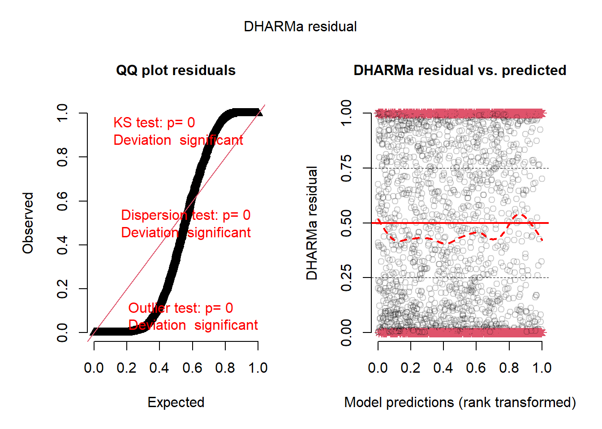
La figure 2.11 indique clairement un problème dans la distribution des résidus simulés du modèle : ils présentent une dispersion bien plus dispersée qu’attendue pour un modèle de Poisson. Ce phénomène s’explique probablement par la présence d’autocorrélation spatiale dans les résidus (variance supplémentaire non prise en compte), mais aussi par une mauvaise spécification du modèle. Dans ce contexte, il convient de tester une autre distribution, soit la distribution négative binomiale.
model_nb <- fitme(
deaths_3 ~ offset(log(population)) +
income + per_black + per_hispanic + per_atleast_hs +
per_nursing + X65plus +
political_leaning + strict_p3 +
mask_usage_p3 + google_p3 + dist_to_airport + density,
family = spaMM::negbin(),
data = data_mode1
)
resid <- simulateResiduals(model_nb)
plot(resid)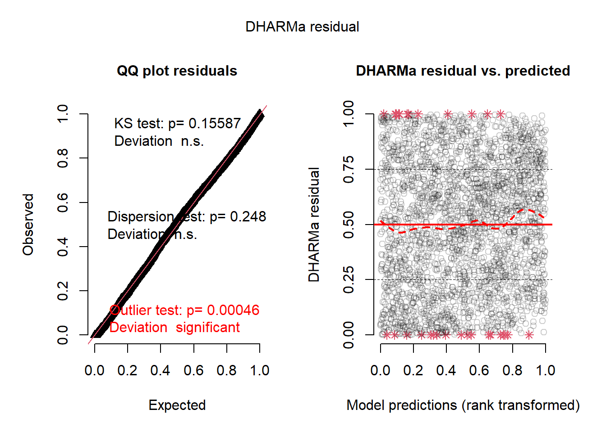
La figure 2.12 indique une bien meilleure distribution des résidus. Intéressons-nous matinenant à la présence éventuelle d’autocorrélation spatiale des résidus. Puisque le modèle assume une distribution négative binomiale, nous utilisons les résidus de Pearson pour calculer le I de Moran, puisqu’ils sont standardisés et tiennent compte de l’hétéroscédasticité.
queen_nb <- poly2nb(data_mode1, queen = TRUE)
queen_w <- nb2listw(queen_nb, style = 'W', zero.policy = TRUE)
test <- moran.mc(residuals(model_nb, type = 'pearson'), listw = queen_w, nsim = 999)
print(test)
Monte-Carlo simulation of Moran I
data: residuals(model_nb, type = "pearson")
weights: queen_w
number of simulations + 1: 1000
statistic = 0.35745, observed rank = 1000, p-value = 0.001
alternative hypothesis: greaterNous constatons que le I de Moran obtenu sur les résidus simulés est élevé 0,36. Il faut donc opter pour un modèle contrôlant la dépendance spatiale. Nous testons ici deux modèles GLMM avec un effet aléatoire : l’un avec une structure de corrélation CAR et l’autre une structure de corrélation avec la fonction Matérn.
library(spaMM)
# ajustement du modèle CAR
data_mode1$oid <- 1:nrow(data_mode1)
queen_nb <- poly2nb(data_mode1, queen = TRUE)
wmat <- matrix(0, ncol = length(queen_nb), nrow = length(queen_nb))
for(i in 1:length(queen_nb)){
wmat[i, queen_nb[[i]]] <- 1
}
model_car <- fitme(
deaths_3 ~ offset(log(population)) +
income + per_black + per_hispanic + per_atleast_hs +
per_nursing + X65plus +
political_leaning + strict_p3 +
mask_usage_p3 + google_p3 + dist_to_airport + density +
adjacency(1|oid),
data = st_drop_geometry(data_mode1),
adjMatrix = wmat,
family = spaMM::negbin()
)
test <- moran.mc(residuals(model_car, type = 'pearson'),
listw = queen_w, nsim = 999)
print(test)
Monte-Carlo simulation of Moran I
data: residuals(model_car, type = "pearson")
weights: queen_w
number of simulations + 1: 1000
statistic = -0.018803, observed rank = 68, p-value = 0.932
alternative hypothesis: greaterLe modèle GLMM avec un effet aléatoire de type CAR est parvenu à réduire significativement l’autocorrélation spatiale des résidus. Nous pouvons maintenant extraire et analyser cet effet aléatoire.
pred_df <- data_mode1
vars <- c('income', 'per_black', 'per_hispanic', 'per_atleast_hs',
'per_nursing', 'X65plus',
'political_leaning', 'strict_p3',
'mask_usage_p3',
'google_p3',
'dist_to_airport',
'density')
for(var in vars){
pred_df[[var]] <- 0
}
pred_df$population <- mean(pred_df$population)
pred_df$pred <- as.numeric(predict(model_car,
newdata = pred_df,
type = 'link'))
pred_df$pred <- exp(pred_df$pred - mean(pred_df$pred))
tm_shape(pred_df) +
tm_polygons(col = NULL,
fill ="pred",
fill.scale = tm_scale_intervals(
n = 7, style = "fisher",
midpoint = 1,
label.format = legende_parametres,
values = "-brewer.rd_bu"),
fill.legend = tm_legend(
title = "Effet aléatoire \nspatial",
frame = FALSE,
position = tm_pos_out("right", pos.v = "center"))
) +
tm_layout(frame=FALSE) +
tm_credits("L'effet spatial a été centré sur 0 et mis en exponentiel.",
position = c("LEFT", "BOTTOM"), size = 0.8)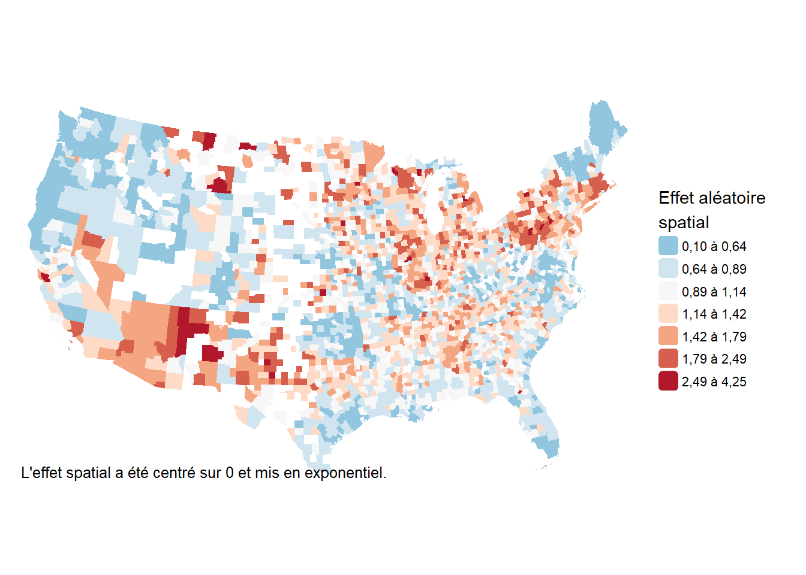
Le terme spatial obtenu (figure 2.13) correspond globalement à celui présenté par les auteurs sur le dépôt github hébergeant leur données. Nous pouvons à présent interpréter les coefficients de notre modèle.
Pour un modèle GLMM, le calcul des valeurs de p pose certaines difficultés, car le nombre de degrés de liberté est difficile à estimer. En effet, l’inclusion d’un effet aléatoire, particulièrement un effet aléatoire spatial, génère un nombre de degrés flous au modèle. Pour notre modèle, considérant le grand nombre d’observations (plus de 2600), il serait acceptable d’utiliser l’approche classique basée sur la distribution t pour calculer des valeurs de p . Deux autres alternatives sont possibles : les tests basés sur le rapport de vraisemblance ou une approche par bootstrap pour obtenir des intervalles de confiance. Si cette dernière approche est la plus robuste, elle est beaucoup plus coûteuse en temps de calcul.
df <- data.frame(summary(model_car, verbose = FALSE)$beta_table)
pvals <- anova(model_car)
df$exp <- exp(df$Estimate)
df$p_val <- pvals[,3]
row.names(df)[1] <- "constante"
knitr::kable(df[c(1,2,4,5)],
digits = 3,
row.names = TRUE,
format.args = list(decimal.mark = ',', big.mark = " "),
col.names = c('coef.', 'Erreur standard', 'exp(coef.)', 'valeur p'))| coef. | Erreur standard | exp(coef.) | valeur p | |
|---|---|---|---|---|
| constante | -3,256 | 1,025 | 0,039 | 0,001 |
| income | -0,009 | 0,001 | 0,991 | 0,000 |
| per_black | 0,003 | 0,001 | 1,003 | 0,007 |
| per_hispanic | 0,008 | 0,001 | 1,008 | 0,000 |
| per_atleast_hs | -0,005 | 0,003 | 0,995 | 0,058 |
| per_nursing | 0,560 | 0,031 | 1,751 | 0,000 |
| X65plus | 0,004 | 0,002 | 1,004 | 0,104 |
| political_leaning | 0,432 | 0,053 | 1,541 | 0,000 |
| strict_p3 | -0,008 | 0,002 | 0,992 | 0,000 |
| mask_usage_p3 | -0,032 | 0,010 | 0,969 | 0,002 |
| google_p3 | 0,004 | 0,002 | 1,004 | 0,007 |
| dist_to_airport | 0,001 | 0,000 | 1,001 | 0,012 |
| density | 0,000 | 0,000 | 1,000 | 0,604 |
À la lecture du tableau 2.3, plusieurs constats peuvent être avancées :
- Le revenu est négativement associé avec le taux de décès. Cependant, cet effet est relativement faible. Un revenu médian supérieur de 1000 $ est associé à une réduction du taux de décès de 0,87 %.
- La concentration de personnes d’origines afro-américaines ou hispaniques est associée avec un plus au taux de décès. Pour ces deux groupes, une augmentation de 10 points de pourcentage correspond respectivement à des augmentations des taux de décès de 3,5 % et 7,94 %.
- Un des effets les plus forts est probablement la part de la population vivant dans des établissements de soins. Chaque augmentation d’un point de pourcentage de cette population est associée avec une augmentation de 75,13 % du taux de décès.
- Il est intéressant de constater que l’alignement politique joue un rôle non négligeable. Toutes choses étant égales par ailleurs, un comté à tendance républicaine (+0,5) plutôt que démocrate (-0,25) a ainsi un taux de décès 38,32 % plus élevé.
À ce stade, nous pourrions envisager une autre structure spatiale pour notre effet aléatoire. En l’occurrence, le package spaMM permet notamment d’utiliser une structure de covariance de type Matérn ou Cauchy basées sur les distances entre les observations. Considérant que les comtés américains sont relativement uniformément distribués, nous pourrions tester cette approche et la comparer au modèle CAR.
Pour spécifier la structure de corrélation spatiale, le package spaMM à besoin des coordonnées des observations en longitude et latitude. Nous reprojectons donc nos observations dans le système de référence 4326.
# Extraction des coordonnées XY des centroïdes des comtés
lonlat <- data_mode1 %>%
st_point_on_surface() %>%
st_transform(4326) %>%
st_coordinates()
data_mode1$longitude <- lonlat[,1]
data_mode1$latitude <- lonlat[,2]Attention, le code ci-dessous prend pas mal de temps pour s’exécuter.
# Ajustement du modèle avec structure de covariance Matérn
model_matern <- fitme(
deaths_3 ~ offset(log(population)) +
income + per_black + per_hispanic + per_atleast_hs +
per_nursing + X65plus +
political_leaning + strict_p3 +
mask_usage_p3 + google_p3 + dist_to_airport + density +
Matern(1| longitude+latitude),
data = st_drop_geometry(data_mode1),
family = spaMM::negbin(),
control.HLfit=list(NbThreads=10)
)
# Ajustement du modèle avec structure de covariance Cauchy
model_cauchy <- fitme(
deaths_3 ~ offset(log(population)) +
income + per_black + per_hispanic + per_atleast_hs +
per_nursing + X65plus +
political_leaning + strict_p3 +
mask_usage_p3 + google_p3 + dist_to_airport + density +
Cauchy(1| longitude+latitude),
data = st_drop_geometry(data_mode1),
family = spaMM::negbin(),
control.HLfit=list(NbThreads=10)
)test <- moran.mc(residuals(model_matern, type = 'pearson'),
listw = queen_w, nsim = 999)
print(test)
Monte-Carlo simulation of Moran I
data: residuals(model_matern, type = "pearson")
weights: queen_w
number of simulations + 1: 1000
statistic = -0.078254, observed rank = 1, p-value = 0.999
alternative hypothesis: greatersimresid <- simulateResiduals(model_matern)
plot(simresid)Pour le modèle avec la structure de corrélation Matérn, les résultats de la fonction moran.mc suggèrent que nous n’avons plus d’autocorrélation spatiale dans les résidus. Cependant, les résidus semblent moins bien distribués que lorsque nous utilisons la structure CAR pour notre effet aléatoire.
test <- moran.mc(residuals(model_cauchy, type = 'pearson'),
listw = queen_w, nsim = 999)
print(test)
Monte-Carlo simulation of Moran I
data: residuals(model_cauchy, type = "pearson")
weights: queen_w
number of simulations + 1: 1000
statistic = -0.09147, observed rank = 1, p-value = 0.999
alternative hypothesis: greatersimresid <- simulateResiduals(model_cauchy)
plot(simresid)Pour le modèle avec la structure de corrélation Cauchy, les résidus semblent encore moins bien distribués. Il faudrait donc probablement éviter de se fier à ce troisième modèle.
La figure 2.15 illustre la fonction de corrélation ajustée pour les deux modèles pour leurs effets aléatoires. Nous représentons notamment la corrélation selon la distance, mais aussi un graphique montrant la corrélation attendue en prenant un comté de référence. Notez ici que le package spaMM applique une transformation aux distances lors du calcul de la matrice de covariance spatiale de l’effet aléatoire. Pour retrouver ces distances, il est nécessaire de passer par la fonction make_scaled_dist.
# Récupération des distances
dists_4326 <- make_scaled_dist(lonlat, rho = 1, return_matrix = TRUE)
dists_proj <- data_mode1 %>%
st_point_on_surface() %>%
st_transform(4326) %>%
st_distance() %>%
as.matrix() %>%
as.numeric()
dim(dists_proj) <- dim(dists_4326)
df_corr <- data.frame(
dists = dists_proj[,1] / 1000,
dists_4326 = dists_4326[,1]
)
# Calcul des valeurs de corrélation basées sur les distances
df_corr$corr_matern <- MaternCorr(df_corr$dists_4326,
nu = model_matern$corrPars[[1]]$nu,
rho = model_matern$corrPars[[1]]$rho)
df_corr$corr_cauchy <- CauchyCorr(df_corr$dists_4326,
rho = model_cauchy$corrPars[[1]]$rho,
longdep = model_cauchy$corrPars[[1]]$longdep,
shape = model_cauchy$corrPars[[1]]$shape)
# Représentation des fonctions
plot_corr <- ggplot(df_corr) +
geom_line(aes(x = dists, y = corr_matern, color = 'Matern')) +
geom_line(aes(x = dists, y = corr_cauchy, color = 'Cauchy')) +
theme_bw() +
scale_color_manual(values = c('Matern' = '#669bbc', 'Cauchy' = '#c1121f')) +
labs(x = 'distance (km)', y = 'corrélation', colour = 'structure de \ncorrélation')
# Représentation cartographique des fonctions
data_mode1$corr_mat <- df_corr$corr_matern
data_mode1$corr_cau <- df_corr$corr_cauchy
legende_parametres <- list(text.separator = "à",
decimal.mark = ",",
big.mark = " ",
digits = 1)
tm_shape(pred_df) +
tm_polygons(col = NULL,
fill ="pred",
fill.scale = tm_scale_intervals(
n = 7, style = "fisher",
midpoint = 1,
label.format = legende_parametres,
values = "-brewer.rd_bu"),
fill.legend = tm_legend(
title = "Effet aléatoire \nspatial",
frame = FALSE,
position = tm_pos_out("right", pos.v = "center"))
) +
tm_layout(frame=FALSE) +
tm_credits("L'effet spatial a été centré sur 0 et mis en exponentiel.",
position = c("LEFT", "BOTTOM"), size = 0.8)
map_corr_mat <- tm_shape(data_mode1) +
tm_polygons(
fill = "corr_mat",
fill.scale = tm_scale_intervals(
breaks = c(0, 0.2, 0.4, 0.6, 0.8, 1),
style = 'fixed',
values = "brewer.blues",
label.format = legende_parametres,
),
fill.legend = tm_legend(
title = 'corrélation Matérn',
legend.is.portrait = TRUE,
frame = FALSE,
position = tm_pos_out(cell.h = "center", cell.v = "bottom")
)
) +
tm_layout(frame = FALSE)
map_corr_mat <- tm_shape(data_mode1) +
tm_polygons(
col = NULL,
fill = "corr_mat",
fill.scale = tm_scale_intervals(
breaks = c(0, 0.2, 0.4, 0.6, 0.8, 1),
style = 'fixed',
values = "brewer.reds",
label.format = legende_parametres,
),
fill.legend = tm_legend(
title = 'Corrélation Matérn',
orientation = "landscape",
frame = FALSE,
position = tm_pos_out(cell.h = "center", cell.v = "bottom")
)
) +
tm_layout(frame = FALSE)
map_corr_cau <- tm_shape(data_mode1) +
tm_polygons(
col = NULL,
fill = "corr_cau",
fill.scale = tm_scale_intervals(
breaks = c(0, 0.2, 0.4, 0.6, 0.8, 1),
style = 'fixed',
values = "brewer.blues",
label.format = legende_parametres,
),
fill.legend = tm_legend(
title = 'Corrélation Cauchy',
orientation = "landscape",
frame = FALSE,
position = tm_pos_out(cell.h = "center", cell.v = "bottom")
)
) +
tm_layout(frame = FALSE)
map_corr_cau
plot_corr
map_corr_mat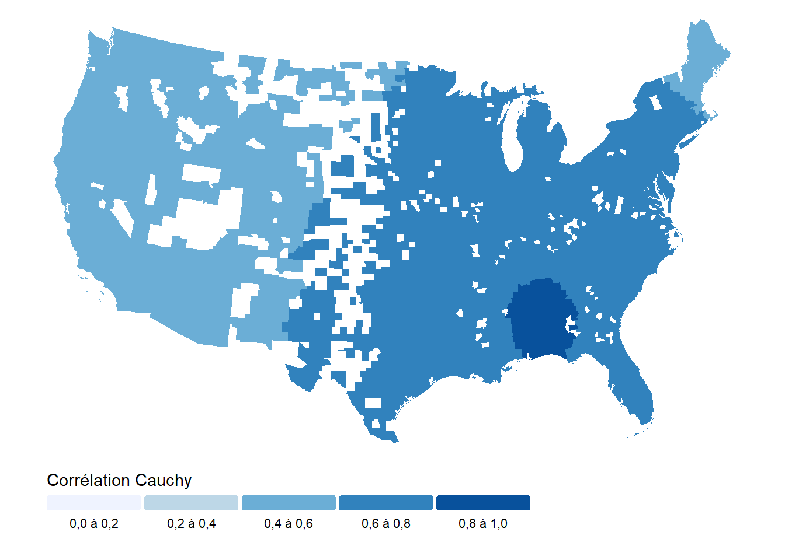
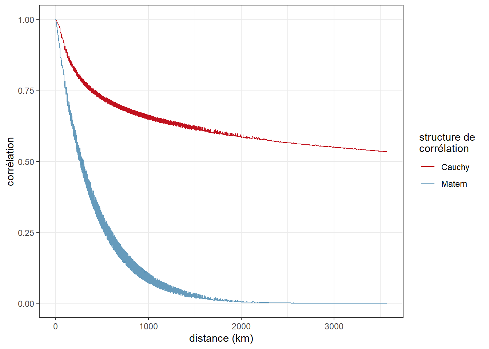
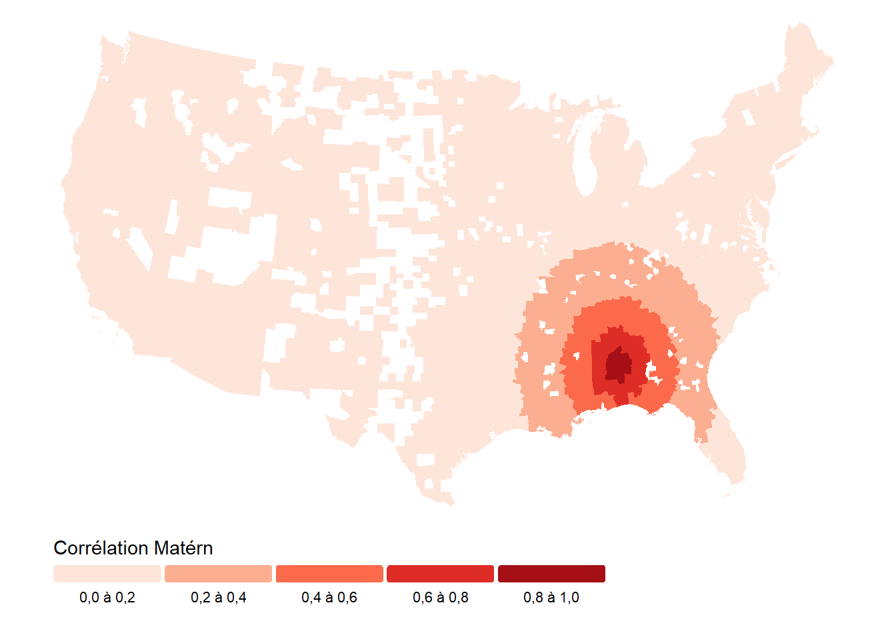
Nous pouvons observer que la fonction de corrélation Cauchy est probablement peu adaptée à nos données. Elle semble bien trop lisser les résultats en autorisant des corrélations importantes entre des comtés éloignés. Pour la fonction Matérn, la corrélation est réduite de moitié au-delà de 260 km, et tombe à zéro aux alentours de 2000 km.
Pour visualiser la contribution de ces effets aléatoires dans les modèles, nous pouvons les cartographier. Puisque les structures de corrélation Matérn et Cauchy se basent sur des coordonnées géographiques, elle est de nature continue. Nous allons donc les représenter comme des variables continues spatialement. Notez également que puisque notre modèle a une fonction de lien log, nous pouvons prendre ce terme spatial centré sur 0 et le transformer avec la fonction exp. Ainsi, nous verrons l’impact de l’espace sur le taux d’infection en effet multiplicatif. Les valeurs proches de 1 indiqueront donc les comtés des États-Unis dans lesquels la tendance spatiale est moyenne. Des valeurs supérieures à 1 indiqueront des comtés dans lesquels toutes choses étant égales par ailleurs, le taux d’infection a été plus élevé.
library(terra)
# Création d'un dataframe des prédictions.
# Puisque la prédiction sera continue, nous créons des points à
# intervalles réguliers sur le territoire. Toutes les variables
# indépendantes sont remplacées par des 0 pour retirer leurs contributions
# dans les prédictions et ne garder que l'effet spatial.
bbox <- st_bbox(data_mode1)
pred_df <- expand.grid(
prt_minorite_vis = 0,
prt_monoparental = 0,
revenu_median = 0,
acs_idx_emp_tc_peak = 0,
acs_idx_emp_pieton = 0,
X = seq(bbox[[1]], bbox[[3]], 25000),
Y = seq(bbox[[2]], bbox[[4]], 25000)) %>%
st_as_sf(coords = c('X', 'Y'), crs = st_crs(data_mode1), remove = FALSE) %>%
st_transform(4326)
# Nécessité ici d'extraire les longitudes et latitudes pour le package spaMM
lonlat <- st_coordinates(pred_df)
pred_df$longitude <- lonlat[,1]
pred_df$latitude <- lonlat[,2]
# Remplacement par des 0 de toutes les variables indépendantes
vars <- c('income', 'per_black', 'per_hispanic', 'per_atleast_hs',
'per_nursing', 'X65plus',
'political_leaning', 'strict_p3',
'mask_usage_p3',
'google_p3',
'dist_to_airport',
'density')
for(var in vars){
pred_df[[var]] <- 0
}
# L'offset population est remplacé par une valeur unique
pred_df$population <- mean(data_mode1$population)
# Prédiction avec le modèle Matérn
pred_df$matern_re <- as.numeric(predict(model_matern,
newdata = st_drop_geometry(pred_df),
type = 'link'))
# On centre la prédiction pour retirer l'effet de la constante et de l'offset.
# pour rappel, l'effet alétoire est bien centré sur 0 dans la spécification du
# modèle
pred_df$matern_re <- exp(pred_df$matern_re - mean(pred_df$matern_re))
pred_df$cauchy_re <- as.numeric(predict(model_cauchy,
newdata = st_drop_geometry(pred_df),
type = 'link'))
pred_df$cauchy_re <- exp(pred_df$cauchy_re - mean(pred_df$cauchy_re))
# Conversion des objets obtenus en raster
raster_cauchy <- pred_df %>%
st_drop_geometry() %>%
dplyr::select(any_of(c("X", "Y", "cauchy_re"))) %>%
as.matrix() %>%
rast(type = 'xyz')
raster_matern <- pred_df %>%
st_drop_geometry() %>%
dplyr::select(any_of(c("X", "Y", "matern_re"))) %>%
as.matrix() %>%
rast(type = 'xyz')
crs(raster_cauchy) <- crs(data_mode1)
crs(raster_matern) <- crs(data_mode1)
# Cartographie des effets spatiaux
usa <- maps::map("state", fill=TRUE, plot =FALSE) %>%
st_as_sf() %>%
st_transform(st_crs(data_mode1))
legende_parametres <- list(text.separator = "à",
decimal.mark = ",",
big.mark = " ",
digits = 2)
cauchy_re_map <- tm_shape(mask(raster_cauchy,usa)) +
tm_raster(
col = "cauchy_re",
col.scale = tm_scale_intervals(
style = 'fisher',
midpoint = 1,
values = "-brewer.rd_bu",
label.format = legende_parametres
),
col.legend = tm_legend(
title = 'Effet aléatoire Cauchy',
orientation = "portrait",
frame = FALSE,
position = tm_pos_in(pos.h = "right", pos.v = "bottom")
)
) +
tm_shape(data_mode1) +
tm_borders(col = 'darkgrey', lwd = 0.01) +
tm_layout(frame = FALSE)
matern_re_map <- tm_shape(mask(raster_matern,usa)) +
tm_raster(
col = "matern_re",
col.scale = tm_scale_intervals(
style = 'fisher',
midpoint = 1,
values = "-brewer.rd_bu",
label.format = legende_parametres
),
col.legend = tm_legend(
title = 'Effet aléatoire Matérn',
orientation = "portrait",
frame = FALSE,
position = tm_pos_in(pos.h = "right", pos.v = "bottom")
)
) +
tm_shape(data_mode1) +
tm_borders('darkgrey', lwd = 0.01) +
tm_layout(frame = FALSE)
tmap_arrange(cauchy_re_map,
matern_re_map,
ncol = 1, nrow = 2)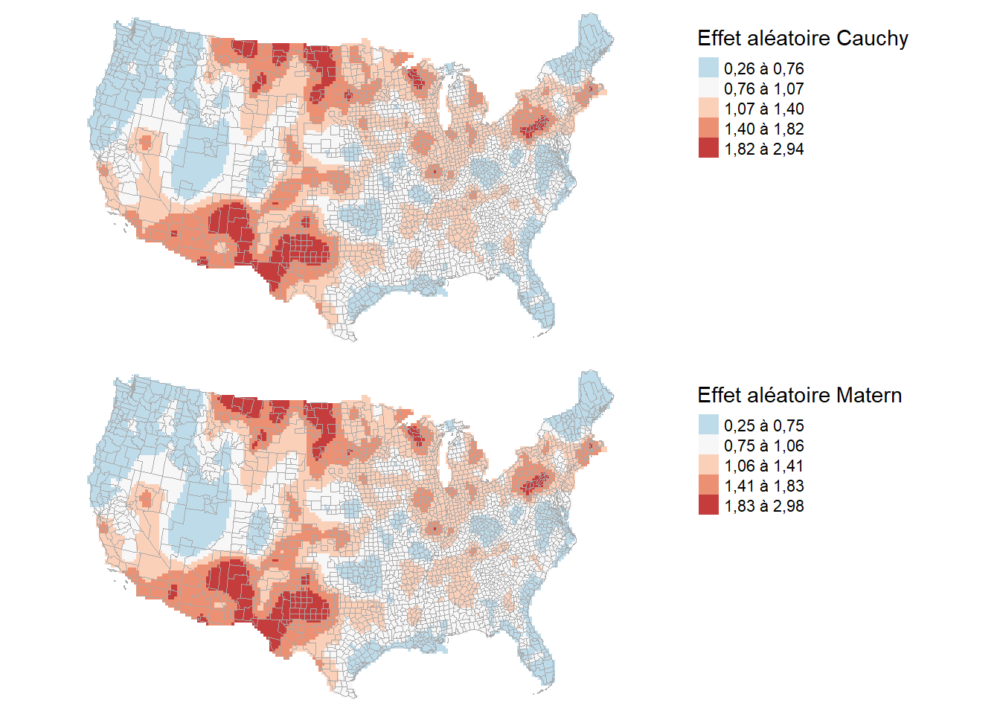
Les deux cartes sont extrêmement similaires avec seulement des changements mineures. Pour terminer, nous pouvons comparer la qualité d’ajustement des trois modèles GLMM avec les AIC (tableau 2.4).
models <- list(model_car, model_matern, model_cauchy)
aics <- lapply(models, spaMM::AIC.HLfit, verbose = FALSE)
aics <- t(do.call(rbind, aics))
colnames(aics) <- c('Car', 'Matérn', 'Cauchy')
knitr::kable(aics,
digits = 0,
format.args = list(big.mark = " "),
row.names = TRUE)| Car | Matérn | Cauchy | |
|---|---|---|---|
| marginal AIC: | 23 087 | 22 773 | 22 768 |
| conditional AIC: | 19 764 | 22 307 | 22 361 |
| dispersion AIC: | 23 061 | 22 747 | 22 742 |
| effective df: | 548 | 1 923 | 2 125 |
AIC conditionnel et AIC marginal
Le package spAMM donne plusieurs versions du AIC pour la sélection de modèles. L’AIC conditionnel et l’AIC marginal ont des visées différentes et peuvent être privilégiés selon les objectifs de l’étude.
- L’AIC marginal considère que les effets aléatoires ne sont pas observés et sont donc marginalisés dans son calcul. Il est préférable de l’utiliser lorsque l’on s’intéresse avant tout aux effets fixes du modèle ou lorsque les prédictions porteront sur de nouvelles observations qui ne faisaient pas partie des données originales.
- L’AIC conditionnel considère que les effets aléatoires ont été observés, son calcul est donc conditionné par les valeurs des effets aléatoires. Il est préférable de l’utiliser si les prédictions futures se font sur des entités déjà observées et dont l’effet propre est connu. Typiquement, lorsque des splines pénalisées sont intégrées dans un modèle pour faire du lissage et sont estimées comme des effets aléatoires, le AIC conditionnel est préféré (Säfken et al. 2021).
Dans notre contexte, les effets aléatoires spatiaux reposent tous sur l’hypothèse d’autocorrélation spatiale et imposent une forme de lissage dans l’espace. De plus, le nombre de comtés est limité. Il serait donc plus pertinent de se baser sur l’AIC conditionnel pour déterminer le meilleur modèle. Le modèle CAR semble donc le mieux ajusté. Rappelons qu’il s’agit aussi du modèle pour lequel les résidus simulés étaient les mieux distribués.
library(kableExtra)
# Extraction des effets fixes du modèle CAR
df <- data.frame(summary(model_car, verbose = FALSE)$beta_table)
pvals <- anova(model_car)
df$exp <- exp(df$Estimate)
df$p_val <- pvals[,3]
# Extraction des effets fixes du modèle
df2 <- data.frame(summary(model_matern, verbose = FALSE)$beta_table)
pvals <- anova(model_matern)
df2$exp <- exp(df2$Estimate)
df2$p_val <- pvals[,3]
df_total <- cbind(
df[,c(4,5)],
df2[,c(4,5)]
)
rownames(df_total)[1] <- "constante"
knitr::kable(df_total, digits = 3,
row.names = TRUE,
format.args = list(decimal.mark = ',', big.mark = " "),
col.names = c('exp(coef.)', 'p','exp(coef.)', 'p')
) %>%
add_header_above(.,c(' ' = 1,'CAR'=2,'Matérn'=2))| exp(coef.) | p | exp(coef.) | p | |
|---|---|---|---|---|
| constante | 0,039 | 0,001 | 0,023 | 0,028 |
| income | 0,991 | 0,000 | 0,991 | 0,000 |
| per_black | 1,003 | 0,007 | 1,004 | 0,004 |
| per_hispanic | 1,008 | 0,000 | 1,004 | 0,029 |
| per_atleast_hs | 0,995 | 0,058 | 0,993 | 0,011 |
| per_nursing | 1,751 | 0,000 | 1,634 | 0,000 |
| X65plus | 1,004 | 0,104 | 1,007 | 0,003 |
| political_leaning | 1,541 | 0,000 | 1,488 | 0,000 |
| strict_p3 | 0,992 | 0,000 | 0,992 | 0,000 |
| mask_usage_p3 | 0,969 | 0,002 | 0,977 | 0,189 |
| google_p3 | 1,004 | 0,007 | 1,007 | 0,000 |
| dist_to_airport | 1,001 | 0,012 | 1,000 | 0,257 |
| density | 1,000 | 0,604 | 1,000 | 0,786 |
Il est intéressant de constater que les deux modèles partagent essentiellement les mêmes conclusions à quelques exceptions près (tableau 2.5). Selon le modèle utilisant la structure CAR pour l’effet aléatoire, l’effet du pourcentage de personnes de 65 ans et plus est non significatif. Pour le modèle avec une structure Matérn, la valeur de p est inférieure à 0,05 avec un coefficient en expontentielle de 1,007. Ainsi, une augmentation de 10 points de pourcentage sur cette variable correspondrait à une augmentation de 7,44 % du taux de décès. À contrario, l’effet du port du masque est significatif dans le modèle avec la structure de corrélation CAR, mais pas dans celui avec la corrélation Matérn. Cependant, rappelons que la fiabilité de cette donnée est assez limitée; elle a aussi une variation assez faible allant de 85 % à 100 %. Une augmentation de 5 points de pourcentage serait associée avec une réduction du taux de décès de 14,64 %.
Le choix du modèle est donc crucial pour l’interprétation des résultats. Puisque l’emphase dans l’analyse porte avant tout sur les effets fixes (l’effet aléatoire spatial est uniquement utilisé pour réduire la corrélation spatiale des résultats), alors privilégier le modèle avec le meilleur AIC marginal est aussi un choix qui se justifierait, en l’occurrence le modèle avec la structure de corrélation Matérn.
2.4 Quiz de révision
Les modèles des moindres carrés généralisés (GLS) permettent d’introduire le degré d’autocorrélation spatiale :
Relisez au besoin la section 2.1.1.
Il existe des structures de covariance dans un modèle GLS spatial :
Relisez au besoin la section 2.1.1.
Contrairement aux modèles GLS et CAR, les modèles GLMM permettent de modéliser d’autres distributions que la distribution normale.
Relisez au besoin la section 2.3.
2.5 Exercices de révision
Exercice 1. Réalisation d’un modèle GLS
library(sf, quietly = TRUE)
library(ggplot2, quietly = TRUE)
library(tmap, quietly = TRUE)
library(dplyr, quietly = TRUE)
library(ggpubr, quietly = TRUE)
library(cowplot, quietly = TRUE)
library(spdep, quietly = TRUE)
library(DHARMa, quietly = TRUE)
library(nlme, quietly = TRUE)
library(car, quietly = TRUE)
library(sf, quietly = TRUE)
load("data/Lyon.Rdata")
LyonIris <- st_centroid(LyonIris)
XY <- st_coordinates(LyonIris)
LyonIris$X <- XY[,1]
LyonIris$Y <- XY[,2]
## Construction du modèle MCO
modele_MCO <- lm(NO2 ~ Pct0_14 + Pct_65 + Pct_Img + Pct_brevet + NivVieMed,
data = LyonIris)
summary(modele_MCO)
## Autocorrélation spatiale des résidus du modèle MCO
LyonIris$residual_lm <- residuals(modele_MCO)
knn_list <- knearneigh(LyonIris, k = 10)
nb_list <- knn2nb(knn_list, sym = TRUE)
listw <- nb2listwdist(nb_list, LyonIris, style = 'W', type = 'idw', alpha = 2)
moran.mc(LyonIris$residual_lm, listw, nsim = 999)
# Exponentielle
modelExp <- gls(à compléter)
# Gaussienne
modelGau <- gls(à compléter)
# Sphérique
modelSph <- gls(à compléter)
# Rationelle quadratique
modelRatio <- gls(à compléter)
# Comparaison des modèles avec l'AIC
AIC(modelExp, modelGau, modelSph, modelRatio)
struc <- modelExp$modelStruct$corStruct
print(struc)
## Structure exponentielle
corExpo <- function(n, r, d) {
return((1 - n) * exp(-r / d))
}
distances <- seq(0, 10000, 50)
df_corr <- data.frame(
distance = distances,
correlation = corExpo(n = 0.01718,
d = 3279.694,
r = distances
)
)
ggplot(df_corr) +
geom_line(aes(x = distance, y = correlation)) +
theme_bw() +
labs(title = 'Structure de corrélation du modèle GLS (exponentielle)')
# Résidus du modèle GLS exponentielle
LyonIris$residual_gls <- gls(à compléter)
moran.mc(LyonIris$residual_gls, listw, nsim = 999)
qqPlot(LyonIris$residual_gls)
# subset(LyonIris, LyonIris$residual_gls > 2)
# Comparaison des modèles MCO et GLS
library(knitr, quietly = TRUE)
library(kableExtra, quietly = TRUE)
s1 <- summary(modele_MCO)
s2 <- summary(modelGau)
df1 <- data.frame(s1$coefficients[,c(1,2,4)])
df2 <- data.frame(s2$tTable[,c(1,2,4)])
kable(cbind(df1, df2), digits = 3,
col.names = c('coeff.', 'err. std.', 'val. p',
'coeff.', 'err. std.', 'val. p')) %>%
kable_classic() %>%
add_header_above(c(' ' = 1, "Modèle linéaire" = 3, "Modèle GLS (exp)" = 3))Correction à la section 11.2.1.
Exercice 2. Réalisation d’un modèle CAR
library(spdep)
library(spatialreg)
library(tmap)
load("data/Lyon.Rdata")
## Construction du modèle MCO
modele_MCO <- lm(PM25 ~ Pct0_14 + Pct_65 + Pct_Img + Pct_brevet + NivVieMed,
data = LyonIris)
# Construire un matrice de contiguïté (Queen)
nbs <- poly2nb(à compléter, queen = TRUE)
listw <- nb2listw(à compléter)
# I de Moran sur les résidus du modèles MCO
moran.mc(residuals(modele_MCO), listw = listw, nsim = 999)
# Construire le modèle CAR
modele_car <- spautolm(
à compléter
)
summary(modele_car)
# I de Moran sur les résidus du modèle CAR
moran.mc(à compléter)
# Cartographie de l'effet spatial
LyonIris$car_term <- modele_car$fit$signal_stochastic
legende_parametres <- list(text.separator = "à",
decimal.mark = ",",
big.mark = " ")
tm_shape(LyonIris) +
tm_polygons(à compléter
) +
tm_layout(frame=FALSE) +
tm_scalebar(breaks = c(0,10),
position = tm_pos_out("right", "bottom"))Correction à la section 11.2.2.
Exercice 3 Construction d’un modèle GLMM
library(ggplot2, quietly = TRUE)
library(tmap, quietly = TRUE)
library(dplyr, quietly = TRUE)
library(spaMM, quietly = TRUE)
library(spdep, quietly = TRUE)
library(DHARMa, quietly = TRUE)
load("data/Lyon.Rdata")
## Construction du modèle GLM gaussien
modele_glm <- glm(NO2 ~ Pct0_14 + Pct_65 + Pct_Img + Pct_brevet + NivVieMed,
family = gaussian,
data = LyonIris)
# Construire un matrice de contiguïté (Queen)
queen_nb <- poly2nb(LyonIris, queen = TRUE)
queen_w <- nb2listw(queen_nb, style = 'W', zero.policy = TRUE)
# I de Moran sur les résidus du modèles MCO
moran.mc(residuals(modele_glm), listw = listw, nsim = 999)
# Construire le modèle GLMM de type CAR
LyonIris$oid <- à compléter
queen_nb <- à compléter
wmat <- matrix(à compléter)
for(i in 1:length(queen_nb)){
wmat[i, queen_nb[[i]]] <- 1
}
model_car <- fitme(
NO2 ~ Pct0_14 + Pct_65 + Pct_Img + Pct_brevet + NivVieMed +
adjacency(1|oid),
data = st_drop_geometry(LyonIris),
adjMatrix = wmat,
family = gaussian()
)
summary(à compléter)
# I de Moran sur les résidus du modèle CAR
à compléter
# Cartographie de l'effet spatial
pred_df <- LyonIris
vars <- c('Pct0_14', 'Pct_65', 'Pct_Img', 'Pct_brevet')
for(var in vars){
pred_df[[var]] <- 0
}
pred_df$pred <- as.numeric(predict(model_car,
newdata = pred_df,
type = 'link'))
tm_shape(pred_df) +
tm_polygons(à compléter) +
tm_layout(frame=FALSE)Correction à la section 11.2.3.